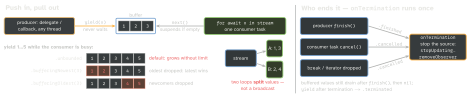

swift · folio
In one line: An AsyncSequence is a pull-based sequence whose iterator’s
next() is async: for try await suspends until the next element or
nil (end). AsyncStream turns a push source (delegate, callback,
notification) into one: the producer yields into a continuation, values wait
in a buffer (default unbounded, no backpressure), one consumer task
pulls them, and onTermination tears the source down.
Download PDF Print view LaTeX source


How it works
AsyncSequence.makeAsyncIterator()returns an iterator (AsyncIteratorProtocol):mutating func next() async throws -> Element?;nilends it.for try await x in s=var it = s.makeAsyncIterator(); while let x = try await it.next(). Swift 6 (SE-0421) adds aFailuretype andnext(isolation:); non-throwing sequences drop thetry.- Lazy, pull-driven:
map,filter,compactMap,flatMap,prefix,dropFirst,first(where:),reducerun per element as the consumer asks. AsyncStream(Int.self, bufferingPolicy:) { cont in }— the build closure runs once, immediately. Better (Swift 5.9, SE-0388):let (stream, cont) = AsyncStream.makeStream(of: Int.self).- The continuation is
Sendable:yieldfrom any thread.yieldreturns.enqueued(remaining:)/.dropped(x)/.terminated.finish()ends;AsyncThrowingStream’sfinish(throwing:)makes the loop throw. - No backpressure:
yieldnever suspends the producer. Need it? A custom iterator, orAsyncChannel(await sendwaits for the consumer). Pull-style producer:AsyncStream(unfolding: { await read() }). - Cancellation: cancel the consuming task → the stream’s
next()returnsnil(loop just ends) →onTermination(.cancelled). A hand-written iterator must checkTask.isCancelleditself.
Example — delegate → stream
final class LocationFeed: NSObject, CLLocationManagerDelegate {
private let manager = CLLocationManager()
private var cont: AsyncStream<CLLocation>.Continuation?
func updates() -> AsyncStream<CLLocation> {
let (stream, cont) = AsyncStream.makeStream(
of: CLLocation.self, bufferingPolicy: .bufferingNewest(1))
cont.onTermination = { [weak self] _ in // runs once
self?.manager.stopUpdatingLocation() }
self.cont = cont; manager.delegate = self
manager.startUpdatingLocation(); return stream }
func locationManager(_ m: CLLocationManager,
didUpdateLocations l: [CLLocation]) {
l.forEach { cont?.yield($0) } } // push
}
let t = Task { for await loc in feed.updates() { show(loc) } }
t.cancel() // loop ends, GPS stops via onTerminationBridging — which tool
| Source | Bridge |
|---|---|
| one-shot callback | withCheckedThrowingContinuation — not a stream |
| delegate, repeated callback | AsyncStream / AsyncThrowingStream + onTermination |
| NotificationCenter | .notifications(named:) (iOS 15) |
| Combine publisher | .values (iOS 15) — demand 1 at a time: a subject’s sends
during the loop body are dropped; add .buffer(size:prefetch:whenFull:) |
| bytes, files | URLSession.bytes(from:), url.lines, FileHandle.bytes |
swift-async-algorithms (Apple package)
merge(a, b) (interleave) · combineLatest(a, b) · zip(a, b) · chain(a, b) · .debounce(for:) (search box) · .chunks(ofCount:) / .chunked(by:) (batch uploads) · .removeDuplicates() · AsyncChannel (back-pressured) · AsyncTimerSequence.
Traps
- Default
.unbounded+ fast producer + slow consumer = memory grows; pick.bufferingNewest(n)for “latest state”. - Two
for awaitloops on one stream: each value goes to one of them. Fan-out = one stream (continuation) per subscriber. - No
finish()and no cancel → the consuming task waits forever. - A stored
Taskyou never cancel keeps the source running;onTerminationcapturingselfstrongly → cycle. breakends your loop; a hand-rolled producer that ignores cancellation keeps working.